Trade in your old golf cart for a new one
Tired of your old golf cart? Call us about a trade-in.
Authorized Tomberlin Dealer & Service Center
New carts from Tomberlin, Star EV, NIU EV, Solana, Bintelli, ActivEV and Aries EV, plus one-of-a-kind custom builds, pre-owned carts and full service for every make. Just 2 miles south of Kemah on Hwy 146.
A trusted local company
For 25 years, Golf Carts of Texas has been the shop local drivers trust for new carts, custom builds and honest service. We're a family-owned business, rooted here in the Houston Bay Area — and we're not going anywhere. When you buy from us, you're buying from people who stand behind their work.
Visit us at our Bacliff shop or our Galveston location. We're here when you need a cart, a repair or a straight answer.
Every new cart and every custom build comes with a bumper-to-bumper warranty.
If it came from our lot, we'll take care of it. We also service Club Car, E-Z-GO and Yamaha.
Don't just take our word for it. Here's what customers who've already bought and serviced here have to say.
“Visited Golf Carts of Texas looking for a cart upgrade. The staff is friendly and knowledgeable about the carts on their lot and offered a fair trade in price on our old cart. Our new cart was delivered to us in Galveston on a Saturday afternoon and noticed an issue that would not let the cart drive into the garage. I thought I would have to leave the cart on the driveway until Tuesday (business is closed Sun and Mon) - the delivery driver came back on Sunday and made the needed modifications! If you are in the market for a new golf cart or an upgrade please check out Golf Carts of Texas”
“My wife and I went there not knowing what to buy. Andrew was very knowledgeable and helpful, explaining to us the different types of models and features on each. Once the financing was finalized, our cart was delivered a few days later. I highly recommend going if you're in the market for a golf cart.”
“I needed a transport of my Golf Cart from San Leon to Friendswood. I was amazed at the professional -quick- caring transportation I received. The price was below expected with a driver who was very knowledgeable on Golf Carts who took time to explain my questions I was also updated on the schedule time of this transport along with taking their time to answer my questions by phone or text. I highly recommend Golf Carts of Texas. They value their customers and go beyond expectations. Thank you”
See more customer reviews on our Google Business listing, or leave one after your visit.
Clips from the lot and the shop. Watch here, or open any video on Facebook.
Tired of your old golf cart? Call us about a trade-in.
Another look at trading in your old cart for a new one. Call us when you're ready.
Tired of your old golf cart? Call us about a trade-in.
Tired of your old golf cart? Bring it to us. We do trade-ins and consignment.
Bintelli carts available in your area today. Pick up and delivery, and trade-ins welcome. Call Galveston at 409-256-7717.
Bintelli carts available in your area today. Pick up and delivery, and trade-ins welcome. Call Galveston at 409-256-7717.
Tomberlin golf carts are available at Golf Carts of Texas. Call us to see what's on the lot.
More Tomberlin carts available at Golf Carts of Texas. Call us to take a look.
ActivEV carts are available at Golf Carts of Texas. Come see what ActivEV has to offer.
Star EV is now at Golf Carts of Texas, including the Sirius and other models. Come in for a test drive.
NIU is here, and we still take trade-ins. Tired of your old golf cart? Call us about a new one.
We work with several local credit unions for financing options. Contact the shop to learn more.
We work with several local credit unions for financing options. Contact the shop to learn more.
We work with several local credit unions for financing options. Contact the shop to learn more.
Solana EV is available at Golf Carts of Texas, a family-owned shop serving Bacliff and Galveston.
A family-owned shop with a full service center, serving drivers from our Bacliff and Galveston locations.
Tired of your old golf cart? Call us about a trade-in.
A six-passenger ActivEV by Bintelli with a backup camera, warranty, and street-legal setup.
Rows of carts on the lot. Tired of your old golf cart? Call us for service — we can help.
Financing
Found the cart you want? Financing applications are through Octane. Apply online, then let us know you've applied and we'll take it from there.
Golf carts by Tomberlin lead in safety
We take the approach that safety and security should always be engineered and integrated into a personal transportation vehicle, never offered as an aftermarket add-on or sold as an optional upgrade. Unlike the competition, every Tomberlin comes equipped with exclusive safety features to help protect you, your passengers and your belongings.
See the Tomberlin lineup
Standard on every Tomberlin, not an add-on.
Confident stopping power at every corner.
Keep your belongings secure.
Your cart starts with your key only.
New carts from Tomberlin, Star EV, NIU EV, Solana, Bintelli, ActivEV and Aries EV. Availability changes often — call or stop by to see what's on the lot.


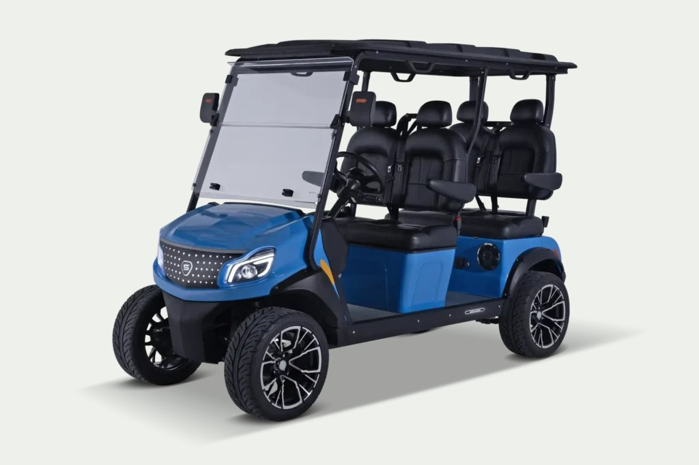
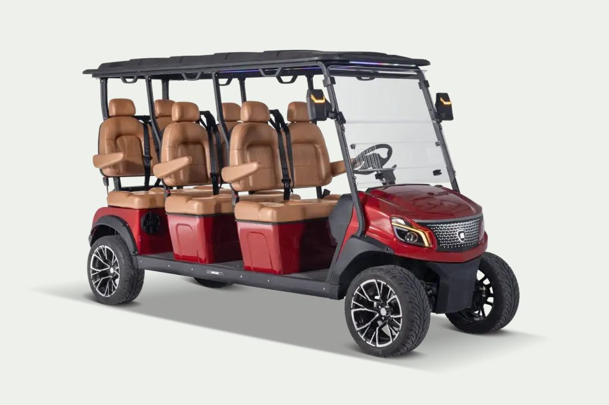

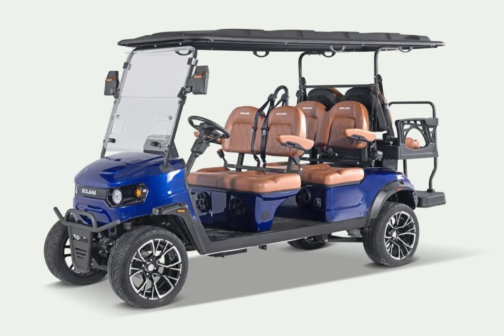

Full current Bintelli lineup. Call for what's in stock.


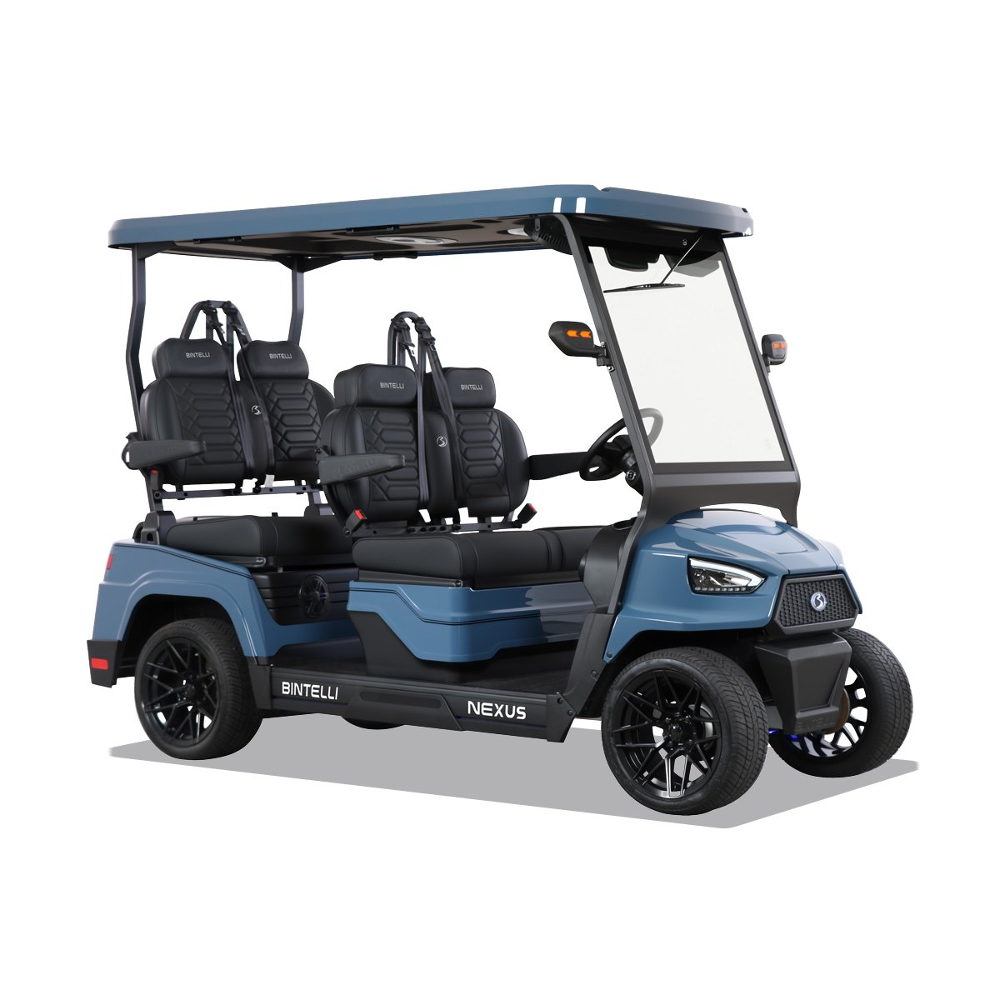


Full current ActivEV lineup. Call for what's in stock.


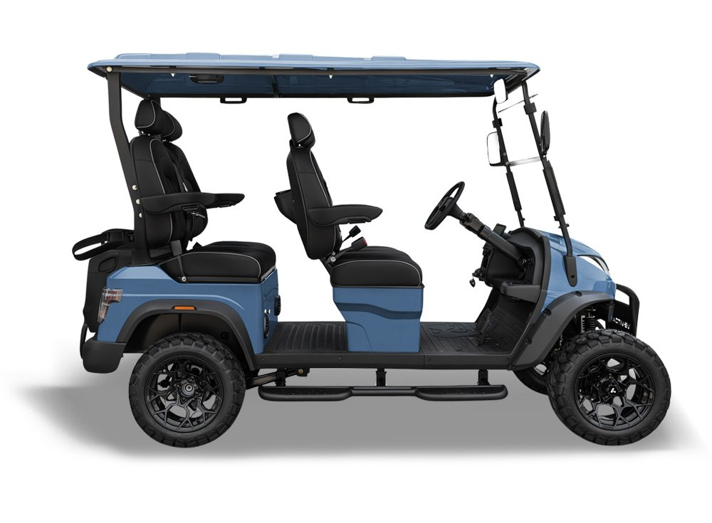


Full current Aries EV lineup. Call for what's in stock.
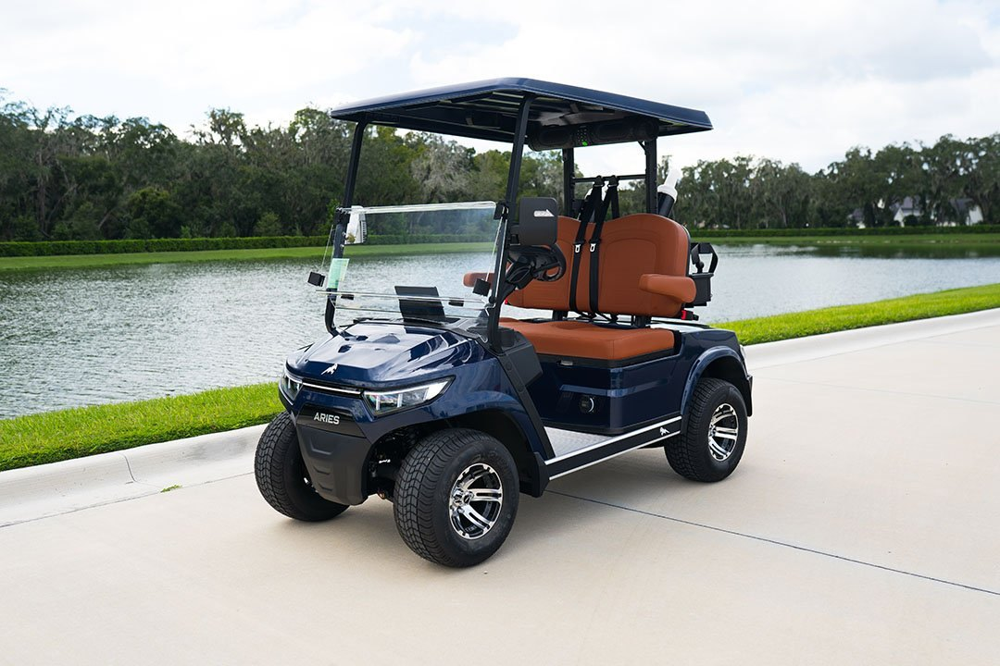

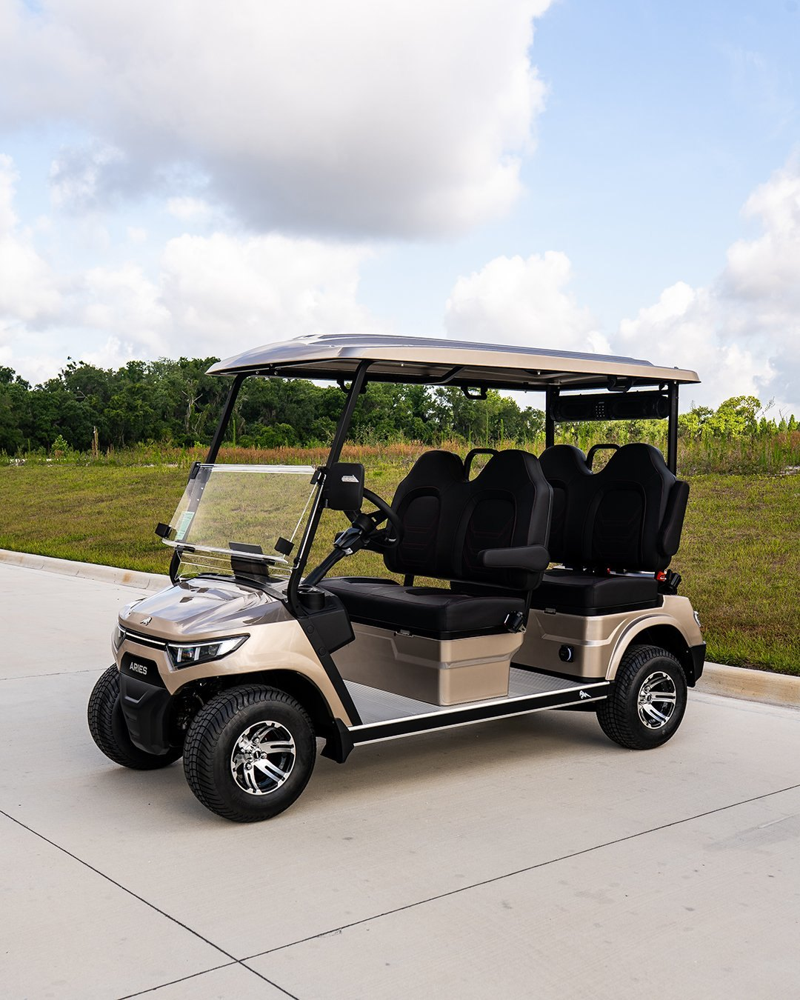


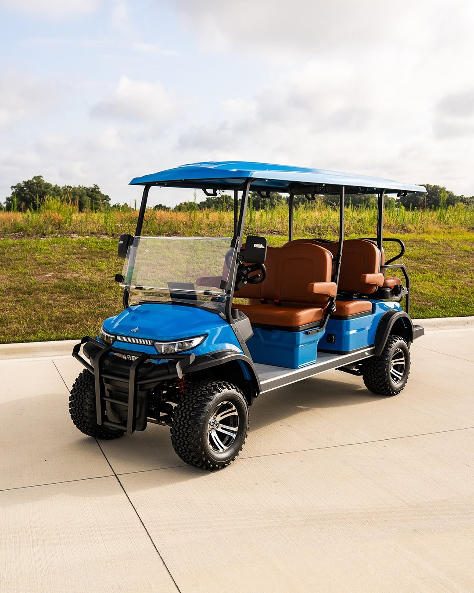


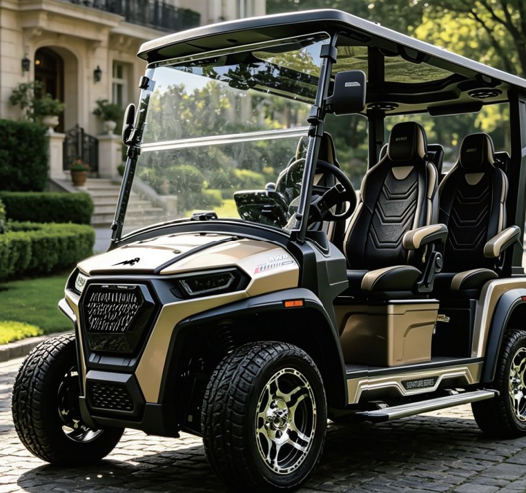

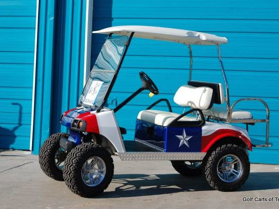
Your colors, your logo, your features. From mild to wild, we build it.
Learn more →
Used and refurbished carts. Inventory changes constantly, so call or stop by.
Learn more →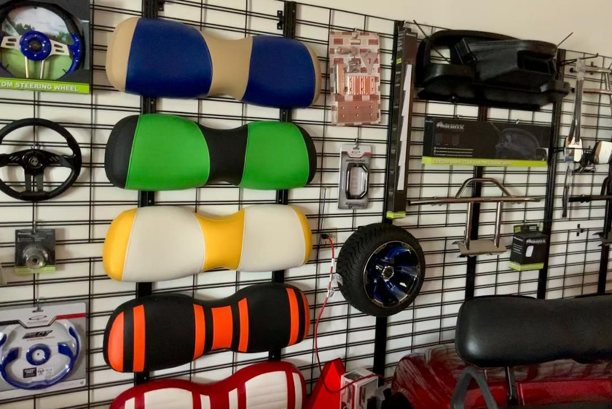
Lift kits, wheels, seats, lighting, sound, brush guards and more.
Learn more →
Repair, rebuild or refurbish any golf cart or utility vehicle, gas or electric.
Learn more →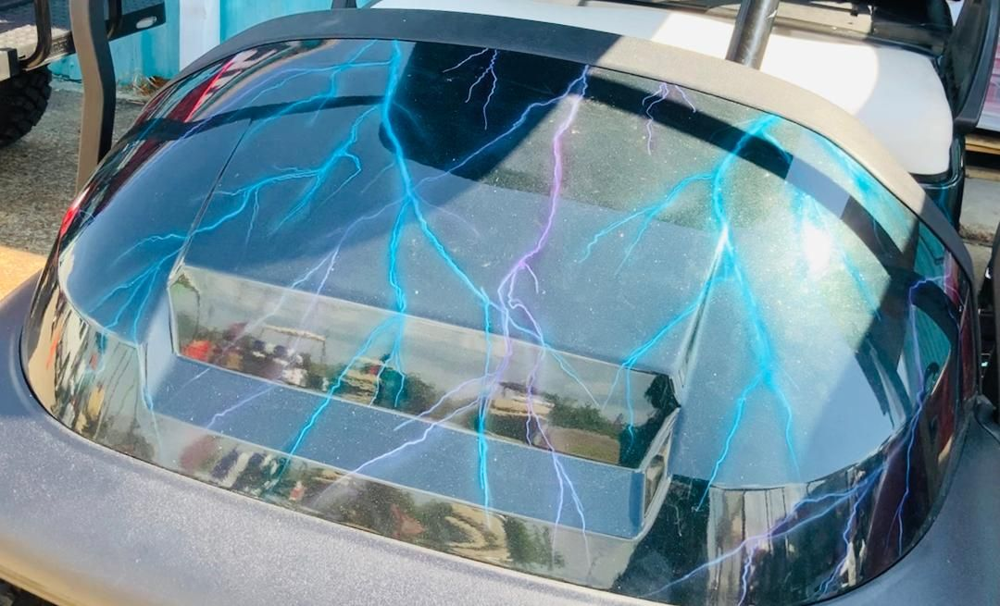
College themes, matching your truck or boat, business colors. Never the same cart twice.
Learn more →Carts and service for cities, schools, parks, campuses, facilities and agencies.
Learn more →Today's cart will likely never see a golf course. It ends up as a beach cart, campground cart, apartment complex cart, hunting cart, farm cart, beach house cart or just a personal carrier. We sell new, custom and used carts and service a wide variety of these increasingly popular and practical vehicles.
We also customize your Club Car, E-Z-GO and Yamaha carts. Tell us what you're looking for and we'll bring the expertise to meet your specifications.
“We can make your dream cart a reality! Bring your ideas to us and we will make it happen!”
Customer Story: Golf Carts of Texas, from Sawblade.tv on Vimeo.
Bring us your ideas. We'll make it happen.